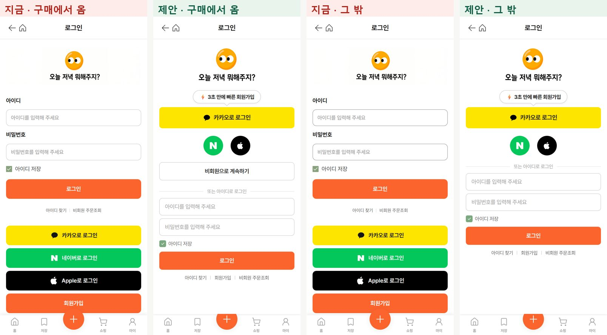

버튼은 그대로 두고 순서와 크기만 바꿔, 모든 버튼이 첫 화면(하단 메뉴 위)에 들어오게 합니다. 지금은 아이디 칸이 맨 위라 카카오 버튼이 571px부터 나오고, 구매에서 왔을 때 「비회원 주문하기」는 하단 메뉴 밑에 가려집니다.
| 항목 | 지금 (개발 앱에서 잰 값) | 제안 |
|---|---|---|
| 위에서부터 순서 | 로고 → 아이디·비밀번호 → 로그인 → 카카오 → 네이버 → Apple → 회원가입 → (비회원 주문하기) | 로고 → 말풍선 → 카카오 → 네이버·Apple 동그라미 → (비회원으로 계속하기) → 「또는 아이디로 로그인」 → 아이디·비밀번호 → 로그인 → 아래 글자 링크 |
| 카카오 버튼 | 높이 52px · 시작 위치 571px(아이디 칸 아래) | 높이 56px · 16px 700 · 모서리 8px · 시작 위치 240px · 「카카오로 로그인」 글자 그대로 |
| 말풍선 | 없음 | 「⚡ 3초 만에 빠른 회원가입」 14px 700 · 흰 바탕 · #CCCFD4 테두리 · 꼬리가 카카오 버튼을 가리킴(버튼과 10px) |
| 네이버·Apple | 큰 버튼 두 개(각 52px) | 동그라미 52px 두 개 · 사이 20px · 카카오 버튼 아래 20px · 가운데 정렬 |
| 비회원 버튼 (구매에서 왔을 때만) | 「비회원 주문하기」 · 835px 자리라 하단 메뉴(790px~) 밑에 가려짐 | 「비회원으로 계속하기」 · 386px · 높이 48px · 흰 바탕 · #CCCFD4 테두리 · 15px 600 · 동그라미 아래 18px |
| 아이디 로그인 | 맨 위 · 칸 위 이름표(아이디·비밀번호) | 「또는 아이디로 로그인」 줄 아래 · 이름표 없이 칸 안 안내 글자 · 칸 높이 46px · 로그인 버튼 48px(지금 색 그대로) |
| 회원가입 | 큰 오렌지 버튼 | 맨 아래 글자 링크 「아이디 찾기 | 회원가입 | 비회원 주문조회」(13px #666666) · 누르면 지금 회원가입 화면 |
| 로고 | 약 133px · 바탕이 흰색이라 옅은 네모가 보임 | 150px · 바탕이 투명한 파일로 교체 |
| 마지막 줄 위치 | 회원가입 버튼 바닥 786px, 비회원 버튼은 메뉴 밑 | 비회원 버튼 있을 때 700px · 없을 때 634px → 모두 하단 메뉴 위에 보임 |

구매에서 왔을 때: 지금(비회원 주문하기가 메뉴 밑) · 제안 / 그 밖: 지금 · 제안
재현: 로그아웃 상태로 https://d1nmxpjaa8tlrm.cloudfront.net/products/137337700 → 옵션 고르고 구매하기 (구매에서 왔을 때) · https://d1nmxpjaa8tlrm.cloudfront.net/login (그 밖)
위 휴대폰 화면의 「지금」은 개발 앱 실제 화면이고, 「제안」은 실제 화면의 위 바·하단 메뉴·로고를 그대로 쓰고 가운데만 다시 놓은 것입니다.